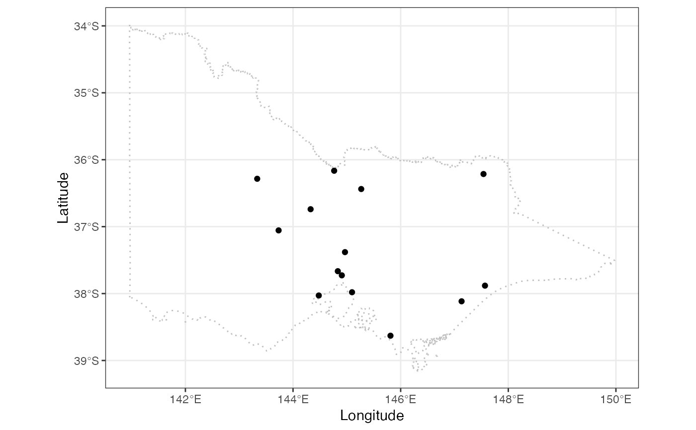

A quick plot of maps
plot_map.RdA quick initiate of a ggplot2 object for map with some default aesthetic setting to save some typing for create a map.
plot_map(map_data, ...)
Arguments
| map_data | the dataset contains the map to be plotted |
|---|---|
| ... | other arguments to be passed into |
Examples
#> #> #>